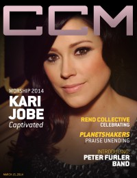

Kari Jobe
 |
| July 2013 Charisma |
 |
| 15 March 2014 CCM Digital |
Media coverage:
- Dec 2010 in Charisma "A Season To Remember: Kari Jobe"
- Apr 2011 in Charisma "Behind The Worship: Changing The Atmosphere"
- Jan 2012 in CCM Digital "Winter Wonder Jam"
- Feb 2012 in HM "Live Report: WinterJam 2012", by Nicole Murphy
- Feb 2012 in CCM Digital "Right Place, Right Time", by Caroline Lusk
- 15 Feb 2014 in CCM Digital "Musicians Corner: Story Behind the Song: Forever"
- 15 Mar 2014 in CCM Digital "Captivated: Kari Jobe is the Majesty of Her Kingdom", by Caroline Lusk
- 1 Apr 2014 in CCM Digital "Tour Spotlight: Majestic Tour, Rosement Theatre, Rosemont, IL", by Andy Argyrakis
- Jul 2014 in Relevant "The Drop: Profile: On Connecting With God and the Breakthrough of Worship"
- 15 Mar 2017 in CCM Digital "Evergreen", by Matt Conner
Albums & reviews:
2009: Kari Jobe
2012: Where I Find You
2014: Majestic (Live)
2016: Gateway Worship Voices
2020: First Love (Live) EP
2020: The Blessing
- Mar 2009 in Charisma, by Leigh Devore
- Mar 2009 in Worship Leader
- May 2009 in YouthWorker, by Andrew Greer
- May 2009 in Today's Christian Woman, by Raelynn Eickhoff
2012: Where I Find You
- Jan 2012 in Charisma, by Gina Meeks
- Jan 2012 in Worship Leader, by Andrea Hunter
- Feb 2012 in CCM Digital, by Grace S. Aspinwall
- Sep 2012 in Worship Leader, by Daryl Bryant
2014: Majestic (Live)
- May 2014 in Worship Leader, by Jeremy Armstrong
2016: Gateway Worship Voices
- 1 May 2016 in CCM Digital, by Matt Conner
- Jan 2017 in Worship Leader, by Jeremy Armstrong
- 1 Feb 2017 in CCM Digital, by Matt Conner
- Jul 2017 in Relevant
2020: First Love (Live) EP
2020: The Blessing
Award Summary (Nominations / Wins)
Dove Awards- Spanish Language Album: Donde Te Encuentro
- Praise & Worship Album: Majestic (Live)
- Artist
- Worship Song: "Forever (We Sing Hallelujah)"
- Recorded Music Packaging: The Garden
- Worship Album: The Garden
- Contemporary Christian Artist
- Long Form Music Video: The Garden Tour (live)
- Worship Recorded Song: "The Blessing (Live)"
- 2012 Grammy Awards
- Best Contemporary Christian Music Album: Where I Find You
- Best Contemporary Christian Music Performance/Song: "The Blessing (Live)"
Published articles:
© 2011 CMnexus. Last updated April 2021. Contact: editor -AT- cmnexus -DØT- org About